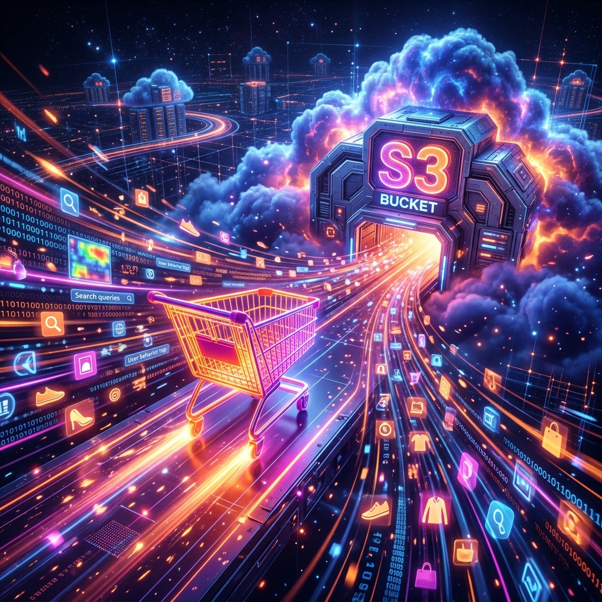

1.2.4.4 E-commerce y Retail
Personalización masiva basada en el análisis de comportamiento en tiempo real
El Desafío
Los gigantes del retail generan una cantidad ingente de "huellas digitales": cada clic, cada producto visualizado y cada abandono de carrito es un dato valioso. El reto es almacenar estos logs masivos de forma económica y escalable, pero manteniéndolos "calientes" para alimentar motores de recomendación basados en IA.
La personalización en milisegundos es la diferencia entre una venta cerrada y un usuario perdido.

🛠️ La Solución Técnica
Se utilizan sistemas de almacenamiento de objetos en la nube (como Amazon S3 o Google Cloud Storage) por su escalabilidad ilimitada y bajo coste.
Estos "Data Lakes" se integran con herramientas de procesamiento masivo como Apache Spark y data warehouses modernos (como AWS Redshift) para transformar los logs brutos en insights de negocio en cuestión de minutos.
🏢 Ejemplo Real: Amazon.com
Amazon utiliza S3 como la columna vertebral de su infraestructura de datos, almacenando exabytes de información histórica y reciente.
Combinando estos datos con Redshift y algoritmos de Machine Learning, Amazon es capaz de predecir qué querrás comprar a continuación, optimizando su cadena de suministro y personalizando la página de inicio para cada uno de sus millones de clientes.